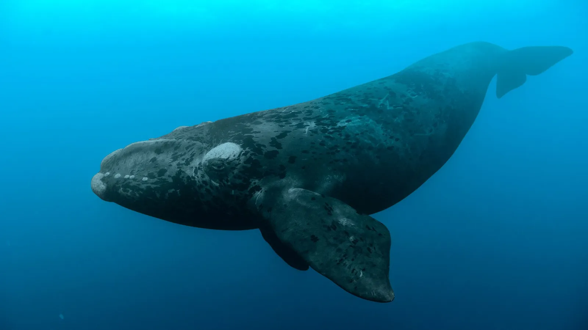

Ballena Franca
La ballena franca (Eubalaena) es una especie de cetáceo conocida por su cabeza grande y sin aleta dorsal.
Características
- Pueden medir entre 14 y 18 metros de longitud.
- Se alimentan de plancton y pequeños crustáceos.
- Tienen callosidades distintivas en la cabeza.
Imagen

Volver a la página principal